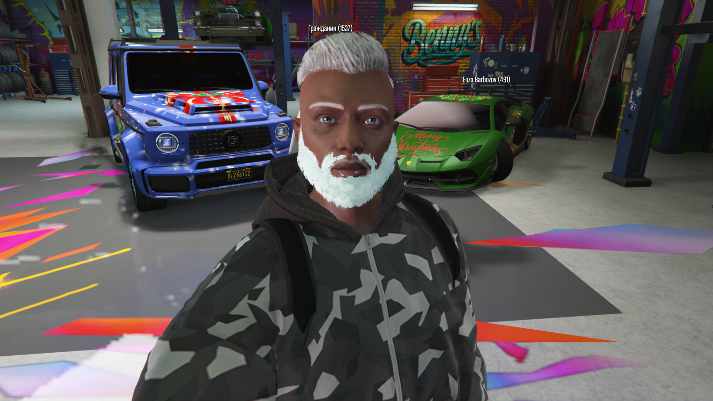
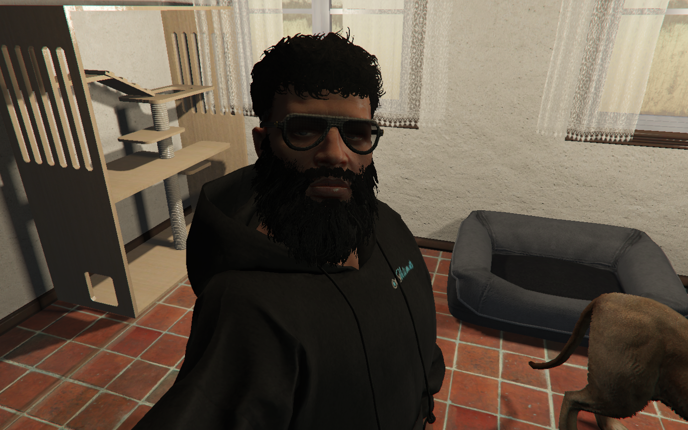

KorbonEXE
.EXE YOUR LIMITS
Мы — не банда. Мы — исполняемый файл в мире Лос-Сантоса.
Каждая операция — это команда в терминале: точная, быстрая, без следов. Ограбления элитных вилл, похищения для выкупа или давления, цифровое стирание улик, подмена VIN-номеров и GPS-координат — всё под идеальным прикрытием сети покрасочных салонов «Korbon Auto Paint».
В 2026 году в Лос-Сантосе ты либо часть кода, либо ошибка, которую удаляют без предупреждения.
Основатели

Garu Korbon
Кодер · Стратег · Архитектор
Мозг всей операции. Родился в промышленном городе Восточной Европы. С 12 лет перепрошивал ECU угнанных машин. После кризиса 2014 года эмигрировал в Лос-Сантос. Создал «EXE-Phantom» — систему, которая делает любую машину невидимой для баз LSPD. Никогда не выходит на улицу. Управляет всем из тени. Девиз: «Если тебя нет в системе — тебя просто нет».

Enzo Barboza
Улица · Скорость · Захват
Правая рука и исполнитель. Вырос в фавелах Сан-Паулу. Гонщик, контрабандист, выживший после разборок с картелем. Приехал в LS с опытом нелегальных гонок и связями в порту. Отвечает за всё, что происходит вне экрана: погони, захват, давление, устранение угроз. Девиз: «Не догонишь — уже мёртв».
Участники
Здесь можешь быть ты.
-
Здесь можешь быть ты.
-
Здесь можешь быть ты.
-
Здесь можешь быть ты.
-
Здесь можешь быть ты.
-
Здесь можешь быть ты.
-
Принципы и угрозы
- Нет шума — только код
- Сеть превыше всего
- Если сломано — перепрограммируй
- Враг не тот, кто стреляет — а тот, кто сливает
Текущие угрозы: Ballas (контроль улиц), Lost MC (мотодетали), LSPD (внутренние утечки), конкурирующие хакерские группы. Мы всегда на шаг впереди — потому что мы не просто играем, мы пишем правила.
Если ты полезен — ты уже в игре. Если нет — тебя сотрут из системы.